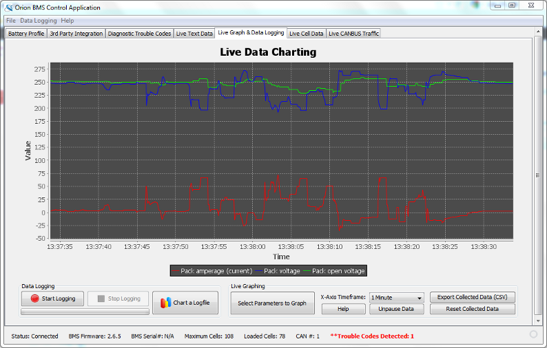

This screen provides real-time visual access to various different BMS parameters . Please see Appendix B: BMS Data Parameters for more details on what the specific parameters mean.
To begin graphing live data on the chart above, press "Select Parameters to Graph'. A dialog will pop up asking which BMS parameters it should graph on the chart. Simply select which parameters to graph and press "Apply' at the bottom to begin charting.
The "X-Axis Timeframe' parameter allows the user to specify how long of a timeframe the chart (X-Axis) keeps track of. The larger the value the longer period of time the graph spans.
Graphing can be momentarily paused by pressing "Pause Data'. During this time the parameters on the chart are not updated. Graphing can be resumed by pressing "Unpause Data'.
The collected data on the Live Data graph above can be exported directly to CSV (comma spaced value) file format by pressing "Export Collected Data (CSV)". This only exports the data collected (visible) in the above graph for the selected timeframe. For longer period data logging it is recommended to use the "Data Logging' feature described lower on this page.
Collected data on the live graph can be cleared (reset) by pressing the "Reset Collected Data' button. This does not clear or remove stored logfiles on the hard-disk.
Data can also be logged from the BMS on this screen using the "Start Logging' button. A dialog will pop up asking which BMS parameters it should log. Simply select which parameters to log and press "Apply' at the bottom to begin logging.
To chart a previously taken data log
Press the "Chart a Logfile' button on the Live Graph & Data Logging page (or select "Data Logging' → "Chart Logfile' from the main program menu).
Select the desired logfile on the hard-disk to chart it. The logfile may take a few moments to process. When it is complete a chart should be visible with several available options along the left side.
Selecting these options will toggle which parameters are actively displayed from the logfile.
| < Live Text Data | Diagnostic Trouble Codes > |